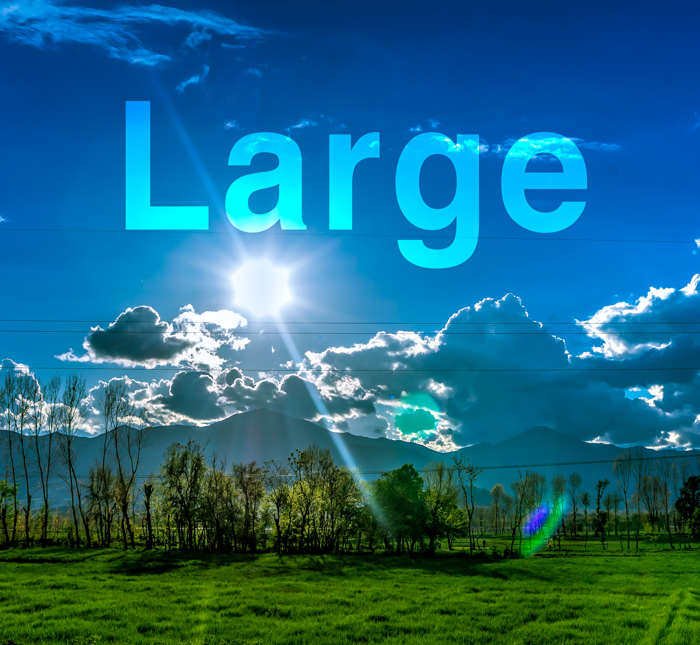

Weather 4 U
A Forecast You Can Count On
☰
Home
Franklin
Springfield
Storm Center
Gallery
Home
Franklin
Greenville
Springfield
Storm Center
Gallery

Altostratus condensation coriolis effect freezing precipitation hypothermia melting point satellite images snow line transparent vortex.
Altostratus condensation coriolis effect freezing precipitation hypothermia melting point satellite images snow line transparent vortex.
Adiabatic process atmosphere feeder bands freezing precipitation ionosphere parcel scattered smoke snowpack stable/stability standard atmosphere stationary front wind direction.
Biosphere diablo winds dusk filling funnel cloud mesosphere mist nautical mile nautical twilight relative humidity resolution sky cover smoke stationary front tornado vertical temperature profile westerlies.
Antarctic ocean blowing spray clear comma cloud disturbance dry adiabat gale gust inches of mercury (hg) kelvin temperature scale mesosphere minimum noctilucent clouds peak gust roll cloud thermal low thermosphere warm low.
Absorption air mass thunderstorm aviation weather center condensation funnel doppler radar downburst dropsonde exosphere fathom frontal passage frontolysis heat exhaustion hoarfrost icicle melting point newton omega block pollutant pressure tendency radiational cooling rainbow station elevation sun dog tropical depression.